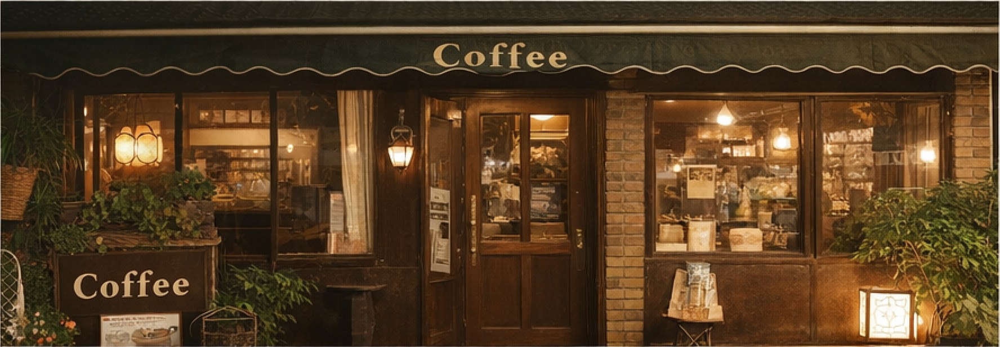
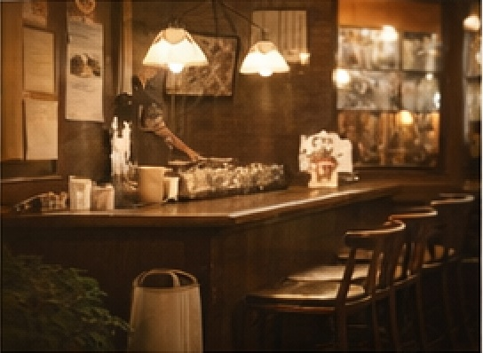
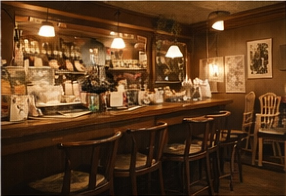
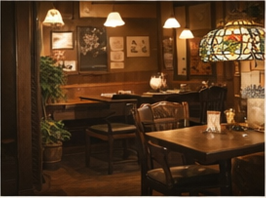

ゆったり過ごせる昔ながらの喫茶店
お店の紹介
店主の砂場幸次郎です。
この店は1965年に父、砂場小太郎が開店しました。
この店ではエチオピア、グアテマラ、コスタリカの豆を使用しています。
お客様から直接お話をうかがって、おひとりおひとりの好みに
合った豆を選んで挽いて淹れるオリジナルコーヒーです。
はじめてのお客様も大歓迎です。
店内全席禁煙で、ゆっくりとお過ごしいただけます。
ぜひ一度足をお運びください。
お店の雰囲気


